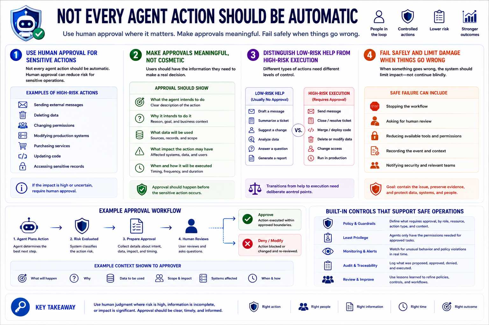

AI Agent Security
Human Approval and Action Controls
Connecting to LMS... Progress: in progress
Version 1.0 | Date: 2026-06-16 | AI agent security guidance evolves quickly. Verify current recommendations against official project, vendor, and security guidance.

Narration
Not every agent action should be automatic. Human approval can reduce risk for sensitive operations such as sending external messages, deleting data, changing permissions, modifying production systems, purchasing services, updating code, or accessing sensitive records.
Approval workflows should be meaningful, not cosmetic. Users should be able to see what the agent intends to do, why it intends to do it, what data will be used, and what impact the action may have. The approval should happen before the sensitive action occurs.
The system should also distinguish low-risk help from high-risk execution. Drafting a message, summarizing a ticket, or suggesting a change is different from sending, closing, merging, deleting, or changing access. Those transitions need deliberate control points.
When something goes wrong, the system should fail safely and limit damage rather than continuing blindly. Safe failure can include stopping the workflow, asking for review, reducing available tools, recording the event, and giving security teams enough context to investigate.